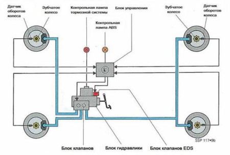

Устройство и основные элементы
Электронная блокировка дифференциала основывается на антиблокировочной системе тормозов (ABS — Antilock Brake System) и является неотъемлемой частью системы курсовой устойчивости ESC. Имитация блокировки отличается от классической системы ABS тем, что может самостоятельно увеличивать давление в тормозной системе автомобиля.
Схема системы электронной блокировки дифференциала:

Основные элементы системы:
- Насос: необходим для формирования давления в тормозной системе.
- Электромагнитные клапаны (переключающий и высокого давления): включены в тормозной контур каждого колеса. Осуществляют управление потоками тормозной жидкости в пределах отведенного им контура.
- Блок управления: осуществляет управление электронным дифференциалом с помощью специального ПО.
- Датчики частоты вращения колес (установлены на каждом колесе): нужны для информирования блока управления о текущих значениях угловых скоростей вращения колес.
Отметим, что электромагнитные клапаны и насос подачи являются элементами гидравлического блока ABS.